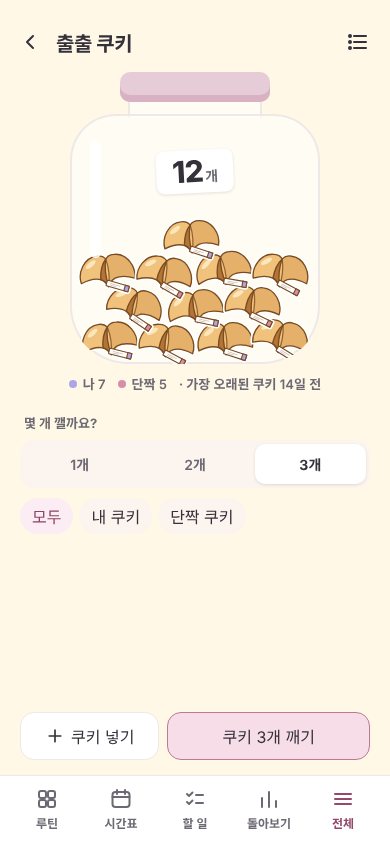
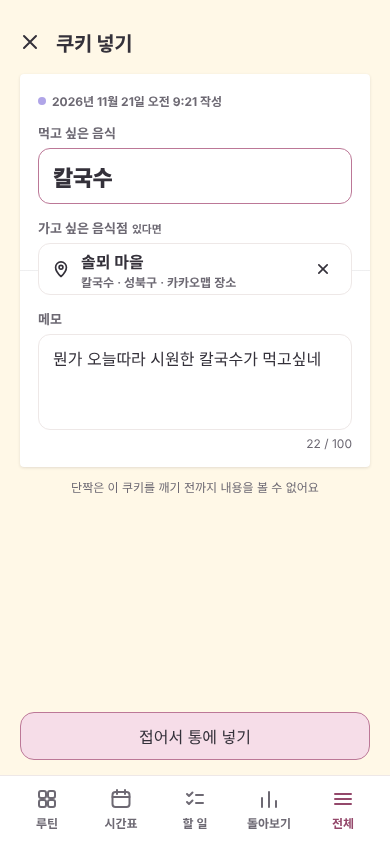
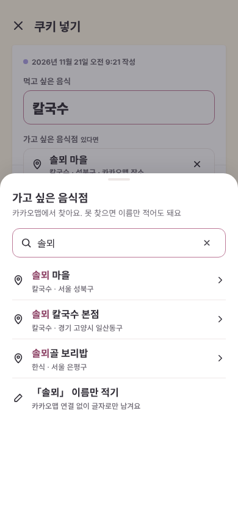
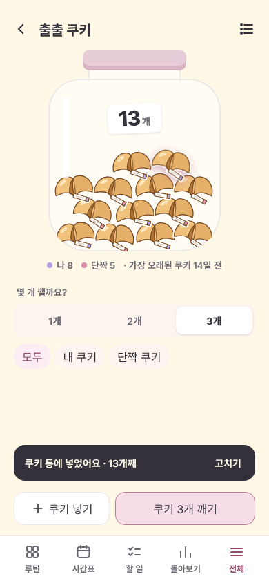
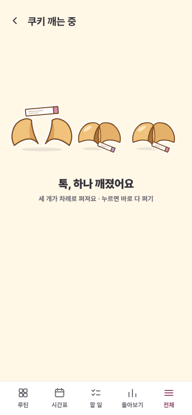
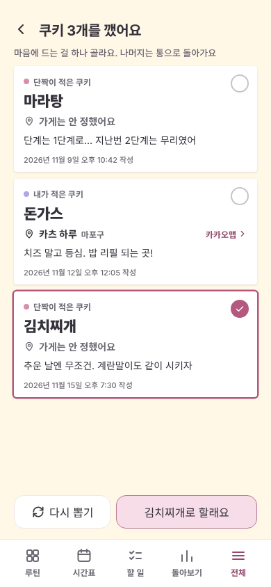
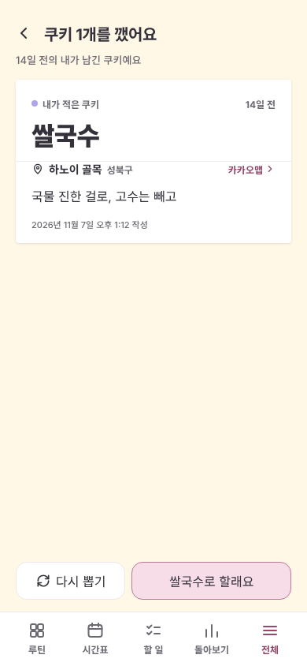
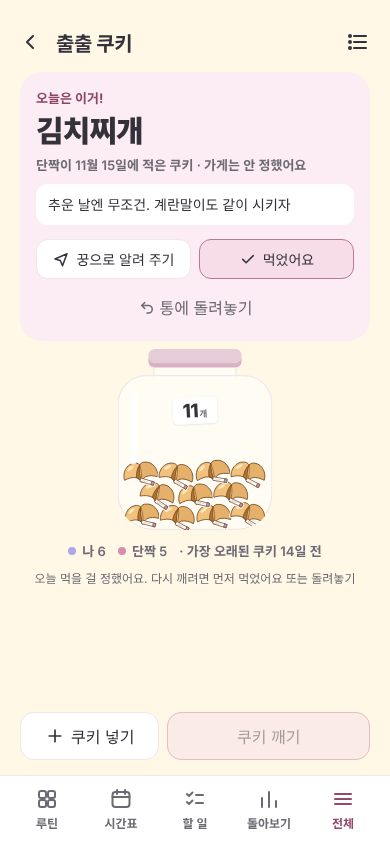
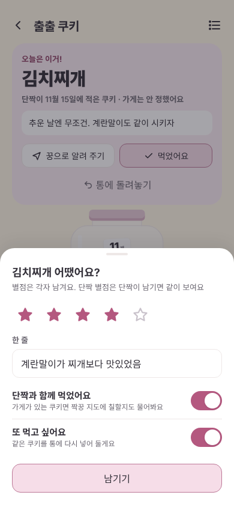
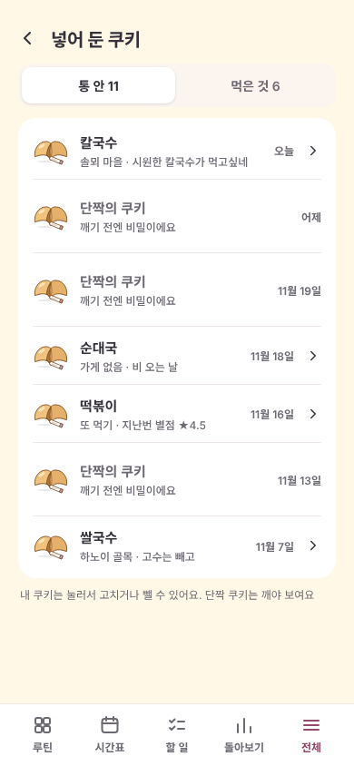
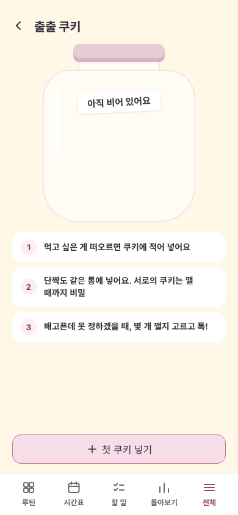
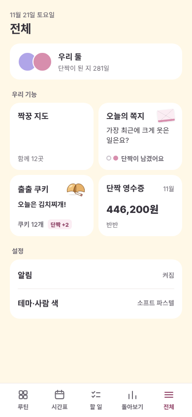
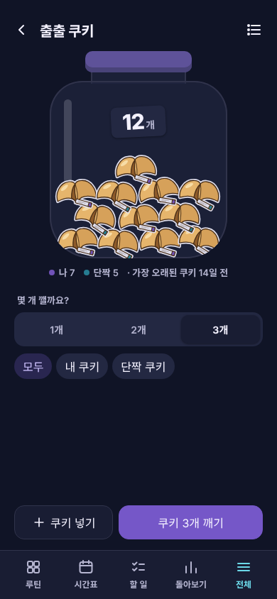
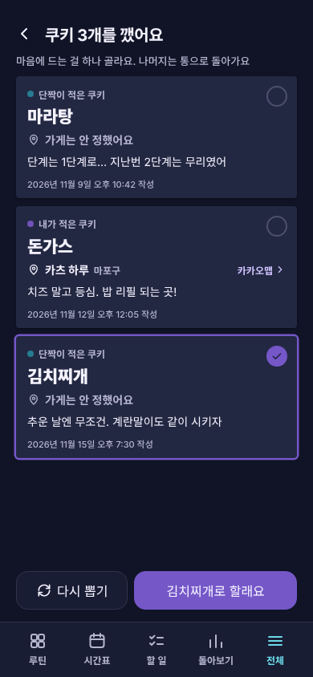
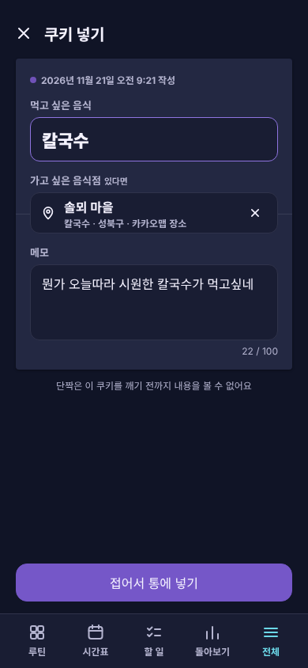
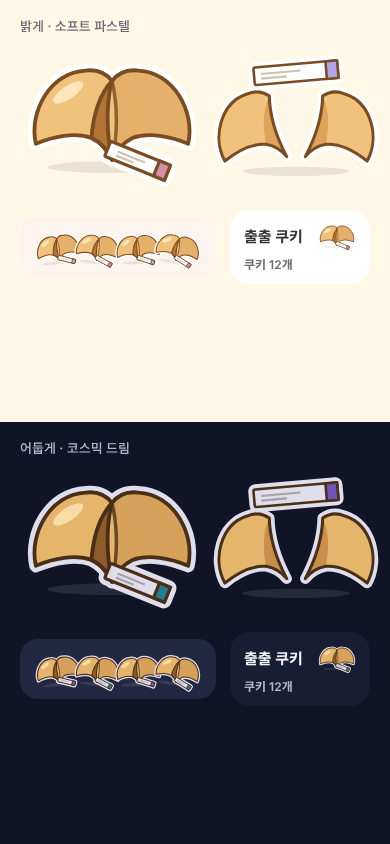
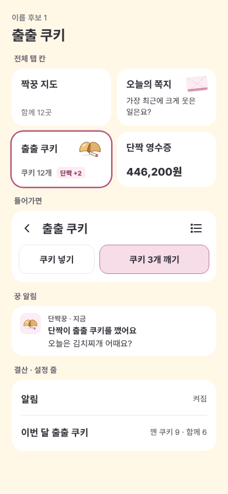
메인 A 유리병 · 결과 2 세로로 펴기 · 입구 I1 2×2 · 쿠키 그림 C 스티커 금빛 · 이름 「출출 쿠키」. 그림을 누르면 HTML(글자 · 부품 확인용), PNG는 폰과 나란히 대조용.
목업 글은 reference/src/text.js와 같음. 글꼴은 프리텐다드로 지정했지만 이 HTML에는 글꼴 파일을 넣지 않아 기기 글꼴로 보일 수 있어요. 숫자는 시험 기록(11월 7~21일, 나 7 · 단짝 5).
















